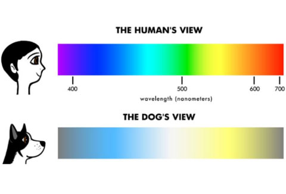

What Is Light?
Light is considered to be an electromagnetic wave (EM) in context of our product. No matter the EM all of them are the same speed (3 x 10⁸ m/s) in vacuum. The thing thats different between all of them is all based off the wavelengths and frequencies since the speed remains the same. For our intended purposes though, we will be focusing on the visible light, since that is what we as humans are able to see.
What Is Color Blindness?
With humans, we have blue, red, and green cones. Cones are photoreceptor cells in the retinas that respond differently to light of various wavelengths. Any missing cone(s) will equate to some sort of color blindness. Some types of colorblindness are: Red - Green color blindness, Blue - Yellow color blindness, and Total color blindness.
What Do Dogs See?
With early research, many have speculated and thought that dogs only see in black and white. For a while this has be held to be true. However, with recent times, studies have found that dogs seems to have colorblindness similar to humans who lack green cones and are “red-green color-blind”. Blue cone and a visual pigment between red and green => Only see yellow, blue, and gray colors. However the thing that is different with dogs compared to humans is that, dogs seems to be more sensitive to light than humans.